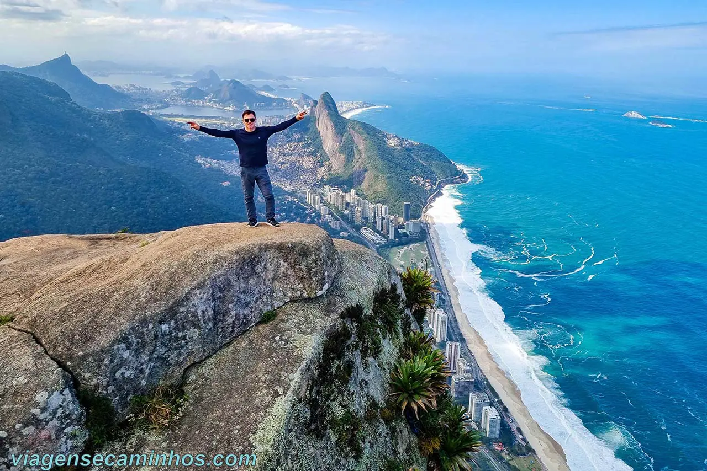
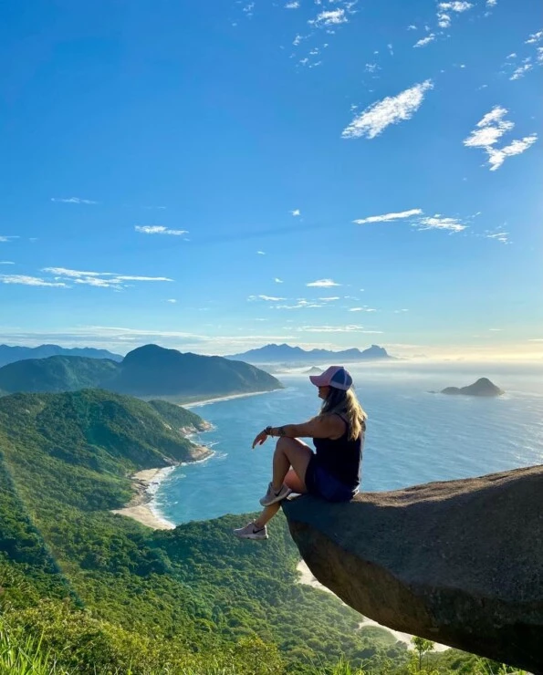
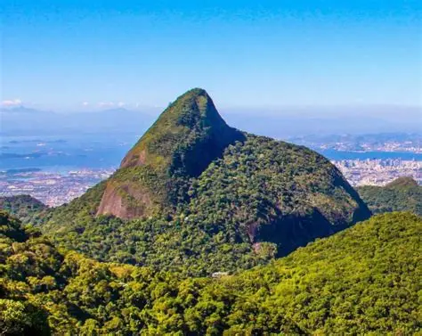

Nossas Aventuras no Rio
Explore as paisagens mais famosas do mundo por ângulos que poucos conhecem. Segurança, história e natureza exuberante.

Pedra da Gávea
O maior monolito à beira-mar do mundo. Um desafio épico com a vista mais famosa do Rio.

Dois Irmãos
Uma trilha rápida com um visual incrível da Zona Sul e de São Conrado.

Pedra do Telégrafo
Famosa pelas fotos incríveis e pela vista das Praias Selvagens de Guaratiba.

Pico da Tijuca
O ponto mais alto do Parque Nacional da Tijuca, cercado por Mata Atlântica.